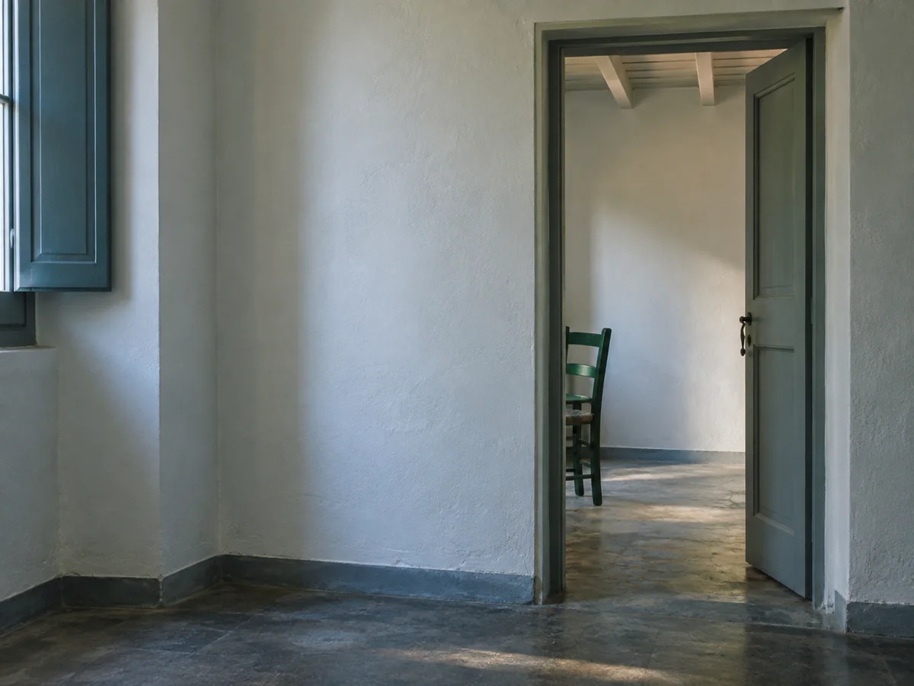
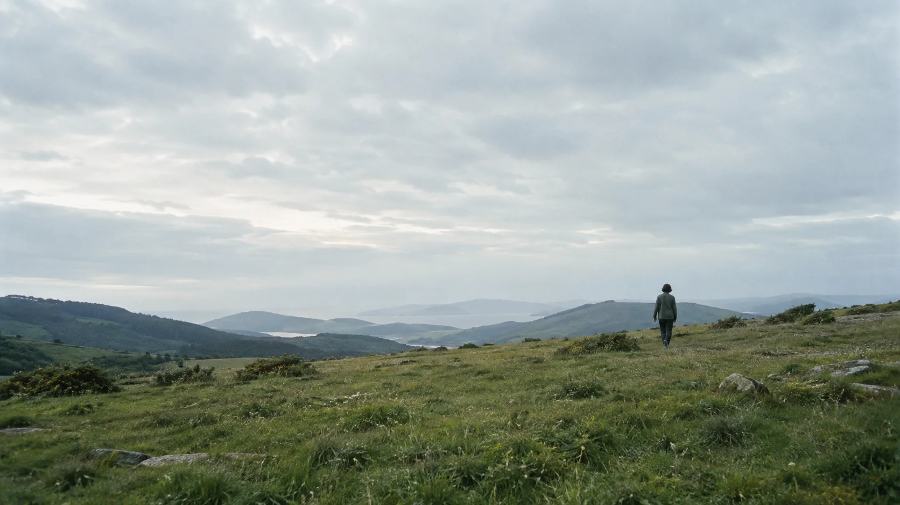
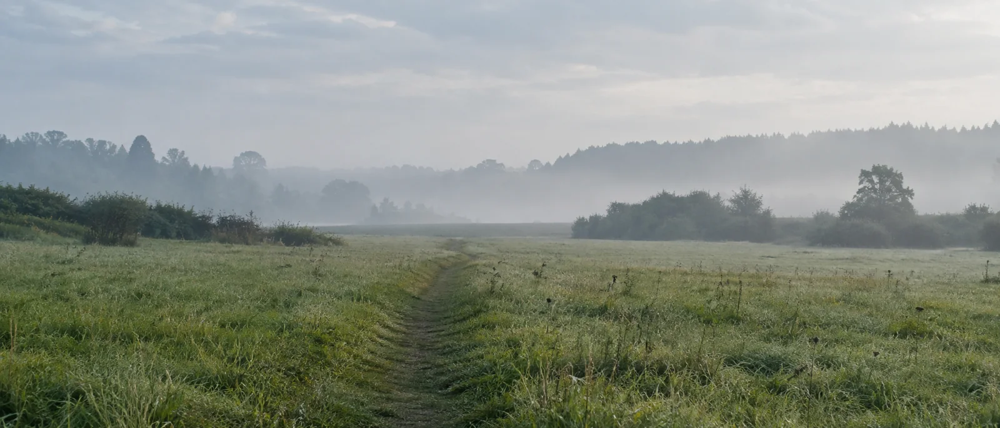

¿Por qué me cuesta tanto poner límites?
Cuando decir que no activa una culpa mucho más grande que la situación.
Leer el artículo
Un lugar donde parar
Hola, soy Claudia
Creé MŪLA para que ir a terapia se sienta más humano y menos ajeno.
Trabajo desde una mirada cercana e integradora, respetando tu ritmo y la forma única en la que has aprendido a estar en el mundo.

Quizá has llegado hasta aquí porque...
También puedes venir sin saber exactamente qué te pasa.
Cómo trabajamos
Sin recetas universales. Tú marcas el ritmo; yo te acompaño a mirar con más claridad.
El cuaderno de MŪLA
Ideas sobre lo que nos pasa por dentro y no siempre sabemos cómo contar.

Cuando decir que no activa una culpa mucho más grande que la situación.
Leer el artículo